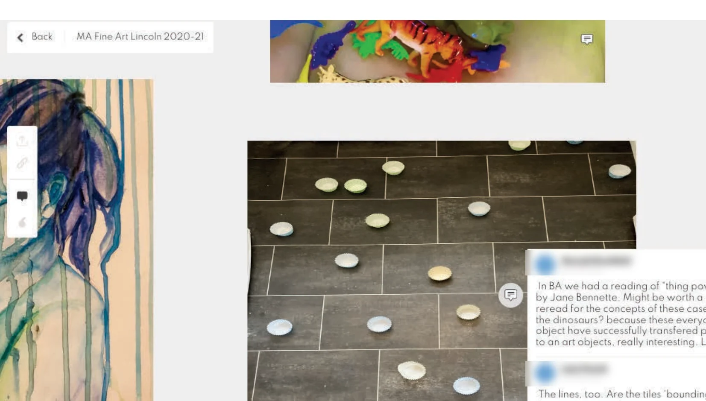
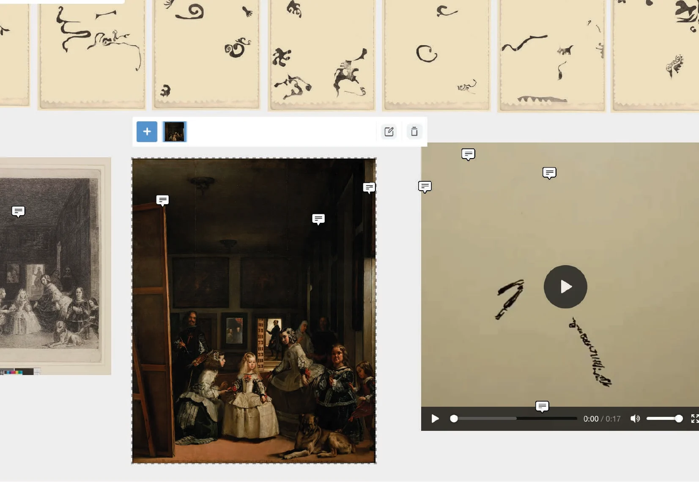
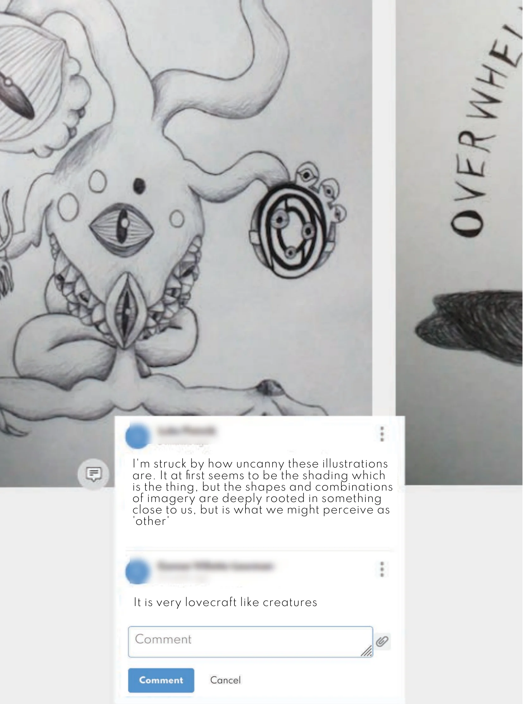
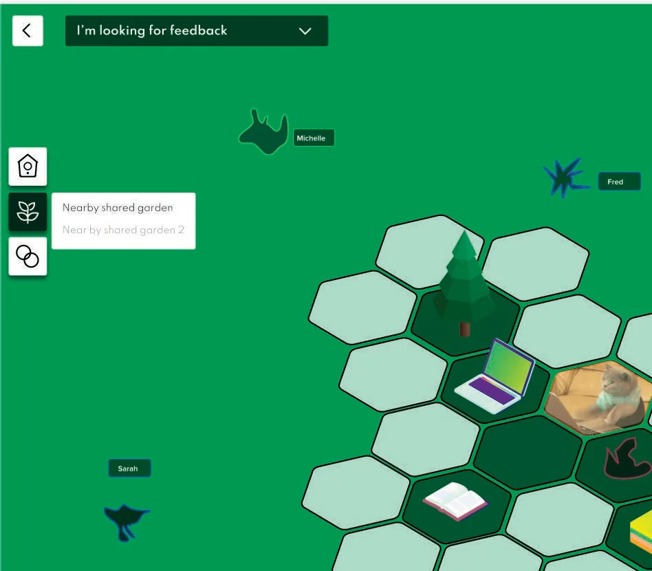

Make.garden
Make.garden was an online studio for makers that I designed and built, a private place to keep work in progress, sketches, notes and the things that inspire it, which you could open up to the people you wanted feedback from.

Built and tested in lockdown
It started as a research project into how artists build their practice and their community, both online and in the real world, and I spoke with over fifty artists while trying out the first version of the software. When Covid closed the studios, art students were left working from bedrooms, garages and kitchen tables, so I tested make.garden with students from several universities to see whether their way of working held up once it moved into a shared space online.
Each project was one big canvas where students could pin up images, films, sketches, notes and references side by side, the way they would on a studio wall, and a timeline showed how a piece had developed over time.

Tutors and other students could be invited in to leave comments pinned to the exact part of a piece they were talking about, so the quick, off-the-cuff conversations of a studio could carry on with everyone apart, and nothing had to be shown to the whole world before it was ready.

An online allotment
The idea came from the allotment, a patchwork of private plots on a shared common, where everyone works in their own time and the work of each one makes the whole place richer.
Each plot is a place of making, uniquely fashioned to progress ideas, in their own time and under their own volition.Make garden: Why are we living on the edge?, 2021
Most apps want to keep you scrolling and liking things forever, rather than getting on with being creative. Make.garden was made the other way round, by and for makers, so it shared their goals, whether that's finishing a piece of work, showing in a group show or changing the way someone sees the world.
What came next
The second prototype, described at the end of the paper, turned each studio into a garden of hexagonal tiles you could shape yourself, with nearby shared gardens, a live map of studios and a status for what you needed, like being up for a group crit.

The paper
In July 2021 Andrew Bracey of the University of Lincoln and I presented make.garden at ADD+ART 2021, a conference on art and social spaces in controlled, uncontrolled and isolated times, as a photo essay called Make garden: Why are we living on the edge? It reads make.garden alongside Roland Barthes' lectures How to Live Together and Etienne Wenger's communities of practice, and asks what an online space has to do to support makers rather than distract them.
Read the paper on the ADD+ART 2021 site, or watch the Spaces · Devices session it was presented in.